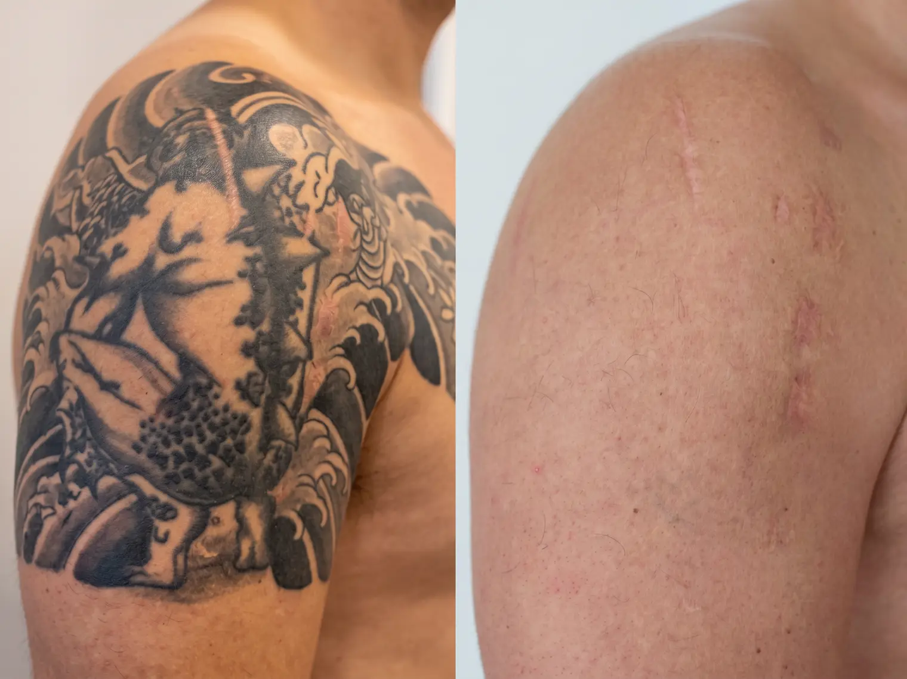

Nashville, Tennessee · Complete Removal Guide · 2026
Removal works, but it takes longer, costs more, and removes less completely than most people expect walking in. 30+ guides covering every part of the process, written by a working tattoo artist.
⚡ Quick Answer
Laser tattoo removal in Nashville typically requires 6 to 15+ sessions spaced 6 to 8 weeks apart, costs between $500 and $4,500+ depending on tattoo size and ink density, and takes 8 months to 2+ years to complete. Full clearance is not always necessary. If you plan to get a cover-up, 2 to 5 sessions of targeted fading is usually enough.
Start Here
Whether you already know you want full removal or you are still weighing removal against a cover-up, these three paths will get you to the right answer faster.
Tell us about your tattoo and your goals. We will point you to a trusted, experienced Nashville removal clinic within 24 hours.
→ Get matched nowSee all 30+ removal guides organized by category, from first consultation to choosing the right clinic.
→ View the full listNever had a removal consultation? Start with what actually happens at your first appointment.
→ Read the guideAll Guides
30+ removal guides written by a working tattoo artist. Find exactly what you need before you book a session.
The first few decisions, your consultation, prepping your skin, and knowing what an actual session looks like, shape the rest of your removal plan. Start with what happens at a removal consultation if you have not booked one yet, or jump to the full timeline if you just want the big picture.
Total cost is the single biggest surprise for first-time clients, since per-session pricing rarely tells the real story. These guides break down realistic totals by size and location, financing options, insurance, and when a package deal actually saves money. Start with what removal actually costs or jump straight to the cost calculator for a factor-by-factor breakdown.
Honest expectations about discomfort, numbing options, healing, and what real progress looks like between sessions. If you are nervous about pain specifically, start with the honest pain breakdown, then check numbing options before your first appointment.
Not every clinic uses the same equipment, and not every removal method actually works. These guides cover the real difference between laser technologies and why removal creams and DIY kits cannot reach ink the way a laser can.
You do not always need full clearance. Targeted fading can prepare skin for a cover-up in a fraction of the time and cost of complete removal. Start with cover-up vs. full removal to see which path actually fits your goal.
Cosmetic tattoos, tattoo age, and clinic quality all change the equation. Before booking anywhere, read what to actually look for in a removal clinic, the honest checklist most people skip.
FAQ
Removal or cover-up, tell us about your tattoo and we will point you to a trusted Nashville clinic or artist.
Find Your Nashville Removal Clinic